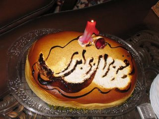

|
|
به مناسبت یکمین سال آغاز به کار کمپین یک میلیون امضا/ کمیته اطلاع رسانی کمپین شیراز
شنبه10 شهریور 1386
زنان فعال ایران، کمپین هدفمندی را آغاز کرده اند که مبارزه برای خواست های ابتدایی و عمومی زن را در دستور کار خود قرار داده و قوانین تبعیض آمیز ضد زن در قانون اساسی کشور را نشانه رفته است .
از محاسن کمپین طرح شعار هایی ست که هم مورد قبول و مطلوب جامعه زنان کشور و هم مورد توافق فعالین حوزه زنان و حقوق بشر با سلایق متفاوت است ، هم فراگیر است و هم بسیاری از احزاب و جنبش های دیگر را توانسته است به حمایت از خود فرا بخواند ،همین امر مشروعیت اجتماعی آن را به شدت افزایش داده است .
از سویی دیگر، کمپین یک ملیون امضا به شیوه خود ، جنبش زنان را از حصار گروه روشنفکران و نخبگان خارج کرده و آن را به جنبشی همه گیر برای توده ای کردن مطالبات تبدیل نموده است.
جنبش هایی نظیر کمپین ، موید این نکته است که راه مسالمت آمیز و دموکراتیک دربیان مطالبات و تلاش در جهت رسیدن به اهداف ممکن است .
لذا ما، پس از گذشت یک سال ازآغاز به کار کمپین ، با کسب تجربه های بسیار ارزنده در فراز و نشیب های روزهای ِ یک سال ِ گذشته، امیدوارتر از گذشته ، در تلاش خواهیم بود تا بتوانیم در راه رسیدن به اهدافمان گام هایی استوارتر و موثرتر برداریم.
فعالین کمپین یک ملیون امضا در شیراز
پی نوشت
5 شنبه 8/6/86 ساعت 5 به بهانه یکمین سال آغاز به کا رکمپین یک ملیون امضا در منزل مسکونی یکی از اعضا دور هم جمع شدیم . از همه چیزسخن گفتیم از خاطرات مشترک و غیر مشترک . گذشته را مروری کردیم و برای آینده نقشه ها کشیدیم ... شمع روی کیک یک سالگی کمپین را با هم خاموش کردیم و برای روز هایی که قوانینمان رنگ عدالت و برابری داشته باشد دعا کردیم ...
2- به دلیل محدودیت فضا مجبور شدیم اطلاع رسانی را محدود کنیم باشد که با پی گیری های بیشتر بتوانیم مراسمی در یک فضای عمومی برگذار نماییم .

3- به دلیل سانحه ای که معمولا برای کیک های مهم اتفاق می افتد !! تزیین این کیک هم دچار مشکل شد که البته تمام تلاش برای مرمت آن صورت گرفت ...
۴- و دیگر سایت های آشنا با موضوع سالروز کمپین یک ملیون امضا